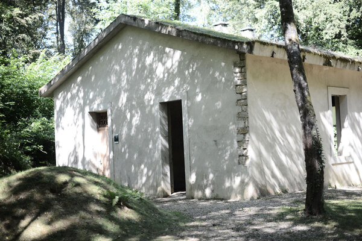
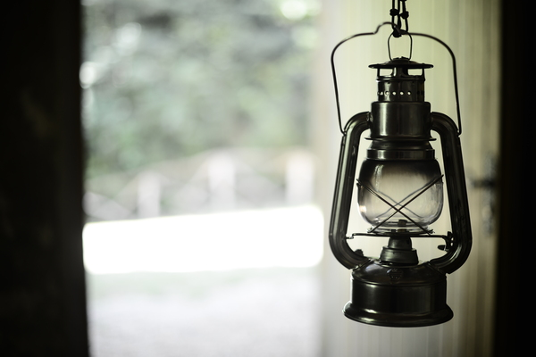

Profitez de la nature à chaque instant
Le refuge est situé à proximité du sentier de randonnée CFL 8 au lieu-dit «Schlassboesch» à 4 kilomètres de la Ville d'Esch-sur-Alzette au Grand-Duché de Luxembourg, à deux pas de la frontière française et à côté de la réserve naturelle Ellergronn.
Sur le modèle des refuges alpins, la MAISON ROSATI peut accueillir quatre personnes pour la nuit dans des conditions spartiates.
Le refuge est constitué de 2 pièces. Pas d'électricité, pas d'eau courante.
Chacune des 2 pièces est équipée de couchettes superposées, d’une table et de bancs.
Barbecue, table et bancs à l’extérieur. Chaque réservation donne droit à la fourniture de 4 litres d’eau et de bois pour le barbecue.
Le site www.unenuitdanslaforet.lu présente le refuge sur Internet.
Un formulaire de réservation en ligne permet d’enregistrer les demandes.
Accessibilité :
Place Pierre Ponath - Mine Heintzenberg
Plus de détails sur ce pdf